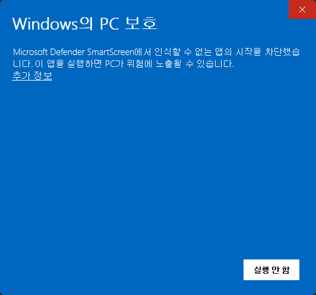
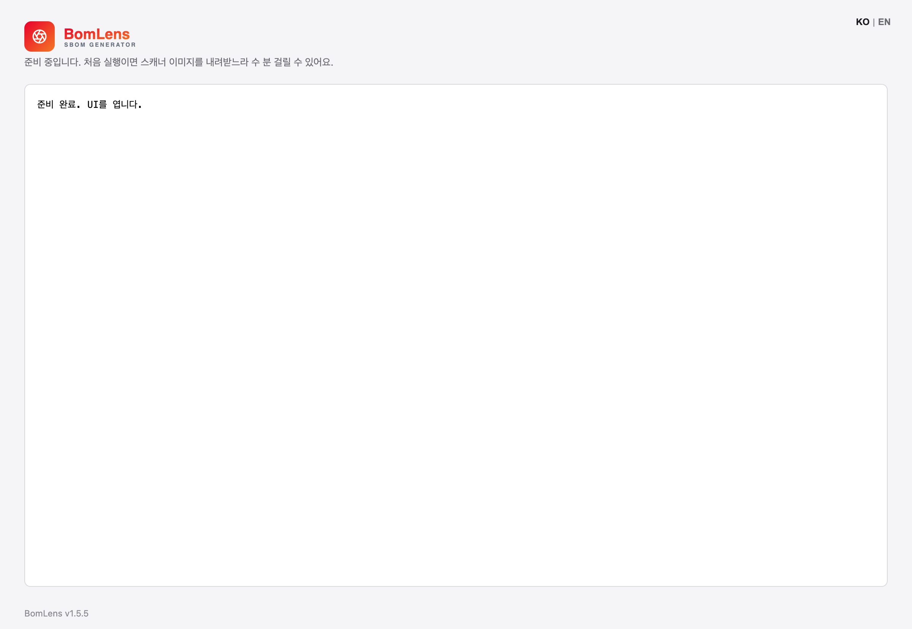
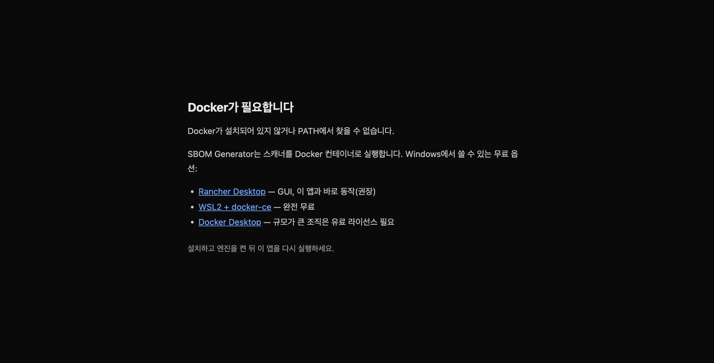
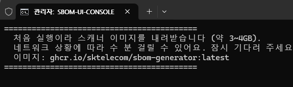
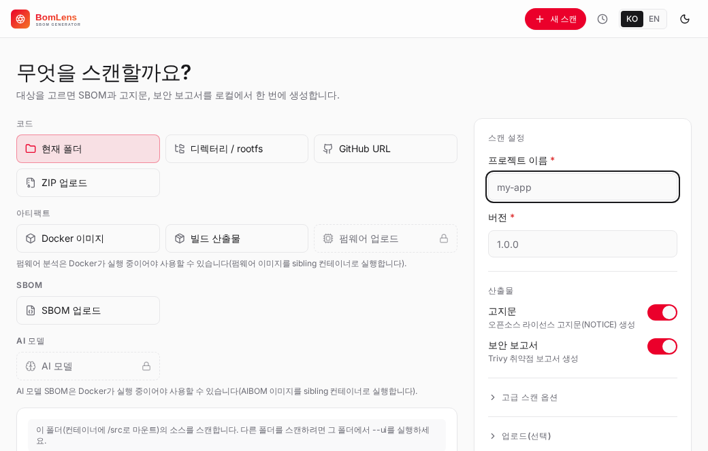
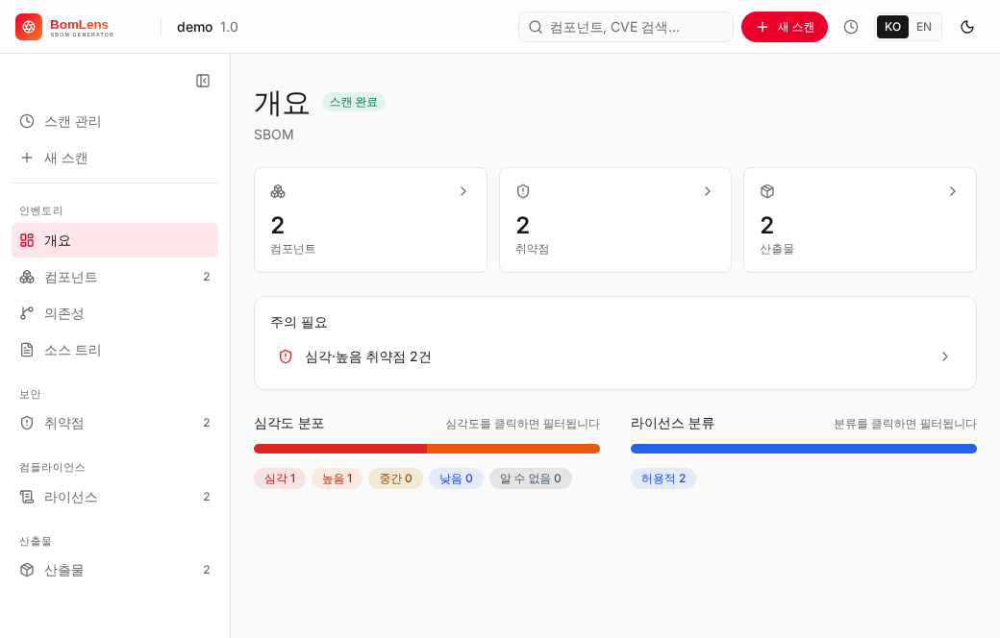
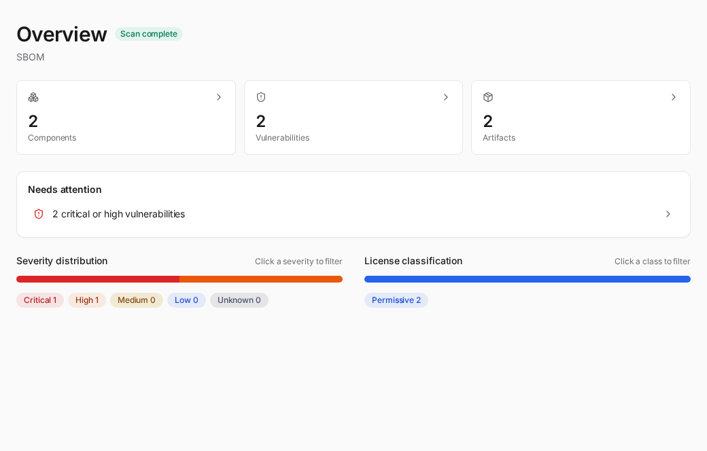

No-CLI quick start (no command line)¶
You do not need to have ever typed a command. This page covers the shortest path for an open-source license manager to turn source code received from a dev team into an open-source notice. It is all clicks in a browser.
What is an open-source notice¶
A document that lists the open-source components in a product and their licenses, provided alongside the product when it ships. Many open-source licenses (MIT, Apache-2.0, BSD, and others) require the copyright notice and the full license text to be included with the product, so a notice that gathers them is needed.
This tool analyzes source code to build a component list (an SBOM), then groups components by license to generate two notice files.
..._NOTICE.txt— a text format to ship as-is with the distribution..._NOTICE.html— a format that reads well in a browser
The prefix (...) is the project name and version you entered. For example, if the project is MyApp and the version is 1.0.0, the file is MyApp_1.0.0_NOTICE.txt.
What you need and how long it takes¶
All you need is a Docker engine. On Windows, for a first install, Rancher Desktop is recommended — it is free and fits the double-click flow well. If you already use Docker, leave it as is and move on. (A detailed comparison of the other options is in Getting started.)
The first time, install and download take a while. Roughly:
- Installing and first launch of Rancher Desktop: about 5–10 minutes
- First download of the scanner image (about 250 MB): usually a minute or two (varies by network, only the first time)
- First scan of a project, which fetches a language image (0.6–1.7 GB): a few more minutes, also once per language
Once set up, opening the app and scanning afterward takes 1–2 minutes.
Walkthrough¶
There are two paths. The desktop app is the simplest, so it is recommended. The overall flow:
flowchart TD
A["Install Docker engine<br/>(Rancher Desktop)"] --> B["Get the desktop app<br/>.exe from releases/latest"]
B --> C["Double-click<br/>(if SmartScreen: More info, Run)"]
C --> D["First-run image download<br/>about 250 MB, once"]
D --> E["Enter project name and version"]
E --> F["Upload source ZIP and scan"]
F --> G["Download NOTICE.txt / NOTICE.html"]Path A — desktop app (recommended)¶
- Install a Docker engine. Download the Windows installer from rancherdesktop.io, install it, and run it. If it asks whether to use Kubernetes during install, you can turn it off. When the taskbar icon settles (usually 1–2 minutes), it is ready.
- Get and run the app. Click Download BomLens for Windows (.exe) and double-click the file. It is unsigned for now, so if Windows shows a "Windows protected your PC" warning, click "More info" and choose "Run anyway". The app opens with no console window.
- First-run image download. The scanner image is pulled just once. The app shows progress as below, so leave the window open and wait. On later launches, the app pulls a newer image automatically when one has been published, so there is nothing to redownload or reinstall by hand.


If Docker is not installed or is stopped, the app tells you what to do instead of starting a scan.

Now go to Scan and get the notice below.
Path B — ZIP and double-click batch file (alternative)¶
If you prefer a script over the desktop app, this path works too.
- Install a Docker engine. Same as step 1 of Path A.
- Download the tool. On the latest release page, download
bomlens-cli-windows.zipfrom the assets and unzip it. You should see ascriptsfolder inside the unzipped folder. (The green Code button on the repository page also gives you a ZIP, but that one is an unreleased snapshot of the current source, not a tagged release.) - Run the web UI. Double-click
sbom-ui.batin thescriptsfolder. At first a black window shows "downloading the scanner image (about 250 MB)", and once done a browser openshttp://localhost:8080. Each scan's results are saved to a{Project}_{Version}\subfolder underC:\Users\<your-name>\sbom-output.
To check that everything is ready, double-click scripts\check-setup.bat in the unzipped folder. It checks Docker installation and status, the scanner image, and port status, in your Windows display language.


If the app won't open on macOS¶
The current macOS build is not yet signed and notarized with an Apple Developer ID, so macOS quarantines the downloaded app. It is the same kind of block as the SmartScreen warning on Windows.
What you see depends on your macOS version. You may get a warning that "BomLens" is damaged and can't be opened, offering only "Move to Trash" — the app is not actually damaged. Or the app may simply open, in which case macOS is running it from a temporary read-only copy rather than from where you installed it (App Translocation). It runs, but not from the location you chose, and nothing guarantees the same state the next time you open it.
The fix is the same either way. Right-clicking the app and choosing Open, or the "Open anyway" button in System Settings, usually does not clear it on recent macOS. The reliable way is to remove the quarantine attribute from a terminal.
- Open the
.dmgand dragBomLens.appinto your Applications folder. - Open Terminal and run the command below, then open BomLens from Applications as usual.
If it still won't open on an Apple Silicon Mac, run this once and try again:
This step is only needed because the current macOS build is not yet signed and notarized, and it goes away once the app is signed.
Scan and get the notice¶
From here the desktop app and the web UI are the same.
- Enter the project name and version.
- For the scan target, choose "ZIP upload" and upload the source code ZIP received from the dev team.
- Click run. The progress log streams in real time, and the result overview appears when it finishes.
To scan a folder already on your disk instead of a ZIP, the desktop app has an Add folder button. On the
sbom-ui.batpath, setSBOM_UI_MOUNT_DIRto that folder before running so the web UI can reach it (the CLI equivalent is--ui --mount <dir>).

When the scan finishes, download the notice from the results screen as per-format chips (HTML, TXT). The SBOM (..._bom.json) and the risk report (..._risk-report.html) generated alongside are available on the same screen, and you can also download everything as a single ZIP. Downloaded files are saved to the results folder as well.

When you get stuck¶
- I don't know what's wrong: double-click
scripts\check-setup.batto check Docker, the image, and port status at once, and it tells you what to do next. It follows your Windows display language: Korean on a Korean system, English everywhere else. To force one, putSBOM_LANG=en(orko) in the settings file described below. - A "Windows protected your PC" warning appears: this is because the desktop app is still unsigned. Click "More info" and choose "Run anyway".
- macOS will not open the app: the "damaged" warning, or a launch that works but runs from a temporary copy, are both the same unsigned-app block. See If the app won't open on macOS to clear it from a terminal.
- It says "Docker is not installed": make sure Rancher Desktop is installed and running.
- It says "the Docker engine is not running": start Rancher Desktop, wait for the icon to settle, then run it again.
- The scan finished but there are no files in the results folder: this can happen if the results folder is outside Docker's file-sharing scope. This tool saves to
sbom-outputunder your home directory (C:\Users\...), which is usually safe. If you still don't see them, download them directly with the download buttons in the browser. - The browser doesn't open automatically: type
http://localhost:8080into the address bar yourself. If port 8080 was busy the launcher moves to the next free port and prints the address it chose, so use that one. - "Image download failed" on a company network: this is almost always a proxy. The image is downloaded by the Docker daemon, not by the launcher, so proxy settings in your command prompt have no effect — set them in Docker Desktop (
Settings > Resources > Proxies) or Rancher Desktop (Preferences > WSL > Proxy). If the proxy also interceptslocalhost, addlocalhostto its bypass list, otherwise the browser shows an error even when the scan is running fine. - No usable network at all: the launcher can install from a file instead of downloading. Ask for
bomlens-image.tar, put it next to the.batfiles, and it is used automatically — no network, no command line. See "Settings file" below.
Settings file (no command line needed)¶
Environment variables you type in a command prompt do not apply when you double-click a .bat, so the launchers also read a plain text file. Copy scripts\bomlens.settings.example.txt to bomlens.settings.txt in the same folder and uncomment what you need:
The file is commented in both English and Korean. A real environment variable, if you set one, still wins over the file.
Removing it¶
Deleting the app leaves the scanner images and the settings behind. The images can exceed 10 GB, so clear these too if you want it gone completely.
Desktop app (macOS):
rm -rf /Applications/BomLens.app
rm -rf ~/Library/Application\ Support/sbom-generator-desktop
rm -f ~/Library/Preferences/com.sktelecom.sbom-generator.plist
On Windows, uninstall the desktop app from Settings; the settings folder left behind is %APPDATA%\sbom-generator-desktop.
The scanner images are the same on every operating system. Remove only the ones you actually pulled.
docker rmi ghcr.io/sktelecom/bomlens ghcr.io/sktelecom/bomlens-aibom \
ghcr.io/sktelecom/bomlens-firmware ghcr.io/sktelecom/bomlens-deep-cve
Your scan results live in the sbom-output folder under your home directory. Leave it alone if you want to keep the reports.
For more detail and command-line usage, see Getting started and the Notice and security guide.
Related: Getting started | Notice and security guide